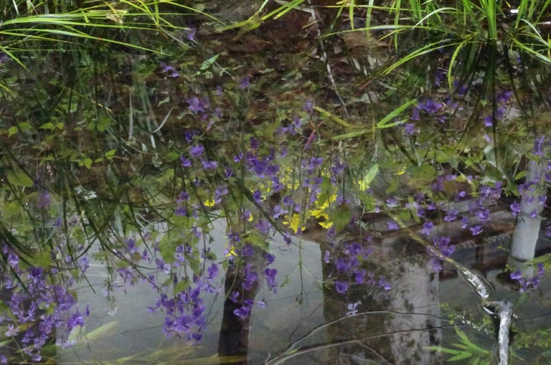

バルギール: ピアノ三重奏曲第2・3番
以前の回でユオンやレフラーの師がヴォルデマール・バルギールという人だったことに触れた。バルギールはクララ・シューマンの弟（父親は異なる）でもあった。Trio Parnassus がバルギールのピアノ三重奏曲全3曲を録音していたので聴いてみたところ、『第1番』はまだ習作の雰囲気が色濃いが、『第2番』と『第3番』は悪くないと思った。
Woldemar Bargiel: Piano Trio No. 3
in B-Flat Major, Op. 37
Trio Parnassus
(Released 1998)
最初に惹かれたのは『第3番』で、平安な雰囲気はベートーヴェンの『大公トリオ』と似ているように感じられた。調性も同じ変ロ長調である。出版されたのが1870年、ほぼ40歳頃だから、ベルリン高等音楽院に来る前、ケルンやオランダのロッテルダムの音楽院で教えていた頃の作品と思われる。5歳下のブラームスはまだ『交響曲第1番』を発表していない。バルギールが当時どういう理念をもって作曲していたのか不明だが、ベートーヴェンの時代から半世紀ほど経っているこの時期にあっては保守的な、古典的均整美を極端に重んじた作品になっている。4つの楽章のバランスも規範的である。但し、一見穏健な曲想で平易な『大公トリオ』であってもベートーヴェンは細部に数多の工夫を凝らしている（例えばスケルツォの中間部を導く半音階的なフガートなど）ので、比較の対象としてはふさわしくないかもしれない（ちなみに『大公』は、気配りの足りない平板な演奏だとBGMになってしまう）。ただ、こういう作品に接するにつけ、つくづくドイツの音楽文化は層が厚いと感心してしまう。
上のアルバムに一緒に入っている『第2番』は10年ほど若い頃の作品であるが、こちらの方が初期ロマン派の情熱を持っている。これについては、別団体による新しいHyperionの録音（下）があって、第1楽章展開部後半などとてもダイナミックな演奏を聴かせている。録音も鮮明である。
Woldemar Bargiel: Piano Trio No. 2
in E-Flat Major, Op. 20
Leonore Piano Trio
(2021)

(Apr. 6, 2024)